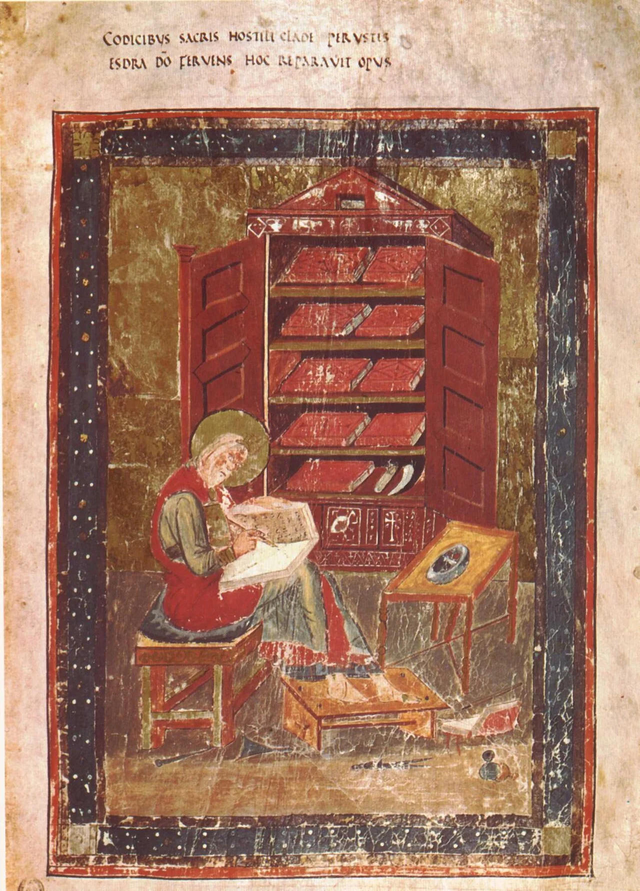
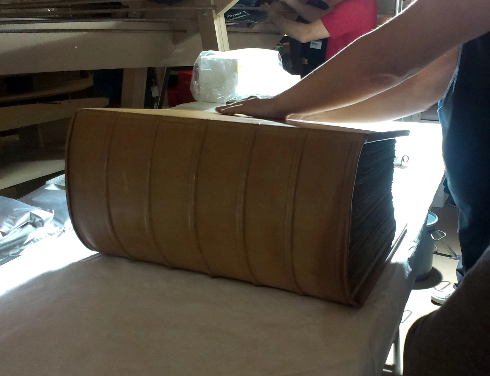

아직 펼치지 않은 카드
성경이라는 책을 읽는 책 · 1존 바턴 『성서의 역사』·『성서의 형성』성경 속 수십 권의 책은 처음부터 한 권이었을까요? 누가, 언제, 어떻게 모았을까요?성경은 처음부터 한 권이었을까?
367년 ~ 716년알렉산드리아 · 이탈리아 남쪽 · 잉글랜드 웨어머스-재로
존 바턴 『성서의 역사』·『성서의 형성』
1,300여 년 전, 잉글랜드 북쪽의 웨어머스-재로 수도원(웨어머스와 재로, 두 곳에 나뉜 한 수도원). 수도사들은 여러 권으로 나누어 베끼던 성경을 통째로 한 권에 담은 큰 책을 만들었어요. 그 책 속 그림의 책장을 본뜬 무대에 아홉 권을 차례대로 꽂고, 마지막에 그 한 권을 놓아 보세요.
옛날 성경은 여러 권으로 나뉜 책이었대. 그런데 잉글랜드의 한 수도원에서 성경을 통째로 한 권에 담은 아주 큰 책을 만들었어. 책장에 한 권씩 꽂아 볼까?
검수 전 시안이에요(기준서 1판). 장면에는 기록에 있는 것만 옮겼고, 자료마다 다른 것은 ‘기록마다 다른 점’에 적었어요. 놓아 보기의 책장 무대는 이 안내서가 그렸어요(옛 그림을 베끼지 않고, 카시오도루스가 적은 아홉 권의 차례를 따라 그렸어요). 상상은 ‘눈 감고 상상해 보기’에만 썼어요.
시안 확인용카드 단계 미리 보기
1
367년, 책 이름을 적은 편지
처음 그리스도인들에게는 아직 신약성경이 없었어요. 예수의 이야기는 처음에 입에서 입으로 전해졌고, 편지와 복음서들은 저마다 따로 쓰였어요.
367년, 이집트 알렉산드리아의 주교 아타나시우스가 부활절 편지(해마다 그해 부활절 날짜를 알리던 편지)를 썼어요. 그 편지에는 오늘 신약성경에 든 스물일곱 권의 이름이 하나하나 적혀 있었어요.
“누구도 여기에 더하지 말고, 여기서 아무것도 빼지 마세요.”
아타나시우스, 39번째 부활절 편지(367) · 영어 번역을 이 안내서가 우리말로 옮김
이 카드의 책을 쓴 옥스퍼드 대학의 성서학자 존 바턴은, 이 편지가 새 목록을 정한 것이 아니라 교회들이 이미 함께 읽던 책들을 적어 둔 것이라고 봐요. 요한이서·요한삼서처럼 몇 권을 두고 조금 망설임이 있었을 뿐이래요.
아주 옛날 주교님이 편지에 성경 책 이름을 하나하나 적었대.
물어보기책 이름을 적어서 나눠 주면 무엇이 좋을까?
2
아홉 권으로 된 성경
6세기 중반, 이탈리아 남쪽 이오니아 바닷가의 비바리움 수도원. 나라의 높은 관리였다가 수도사가 된 카시오도루스는 수도사들이 읽을 책을 모아 서재를 꾸몄어요. 그 서재의 성경은 아홉 권으로 되어 있었어요.
150년쯤 뒤 잉글랜드에서 그린 이 그림 속 책장에도 붉은 책 아홉 권이 들어 있어요. 학자들은 카시오도루스의 아홉 권 성경을 본뜬 것으로 봐요.

“거룩한 책들이 적의 손에 불타 버렸을 때, 하나님을 향한 열심으로 에스라가 이 일을 다시 이루었다.”
그림 위에 적힌 라틴어 글귀 · 이 안내서가 우리말로 옮김
그림 위 글귀는 그림 속 사람을 에스라라고 밝혀요. 성경은 그를 모세의 율법(모세가 전한 하나님의 가르침)에 익숙한 학자이자 제사장으로 소개해요(에스라 7장). 옛 전승은 불타 버린 성경을 에스라가 다시 써서 되살렸다고 전해요.
그림 속 할아버지 뒤 책장에 빨간 책이 가득해. 몇 권인지 세어 볼까?
물어보기하나, 둘, 셋… 모두 몇 권이야?
3
아홉 권, 그리고 한 권
카시오도루스는 아홉 권에 차례를 매겼어요. 한 권 한 권에 성경 속 책이 여러 권씩 들어 있어요. 첫째 권은 창세기부터 룻기까지 여덟 권을 묶은 ‘팔경’이고, 일곱째 권부터는 신약이에요.
아래 책장에 아홉 권을 하나씩 꽂아 보세요. 마지막에는 700년 무렵 잉글랜드 웨어머스-재로 수도원에서 만든 책이 기다려요.
체올프리드라면, 이 큰 성경을 어디에 둘까요?
이 수도원의 수도원장 체올프리드는 성경 전체를 한 권에 담은 큰 책을 세 벌 만들게 했어요. 그 무렵 성경은 시편 한 권, 네 복음서 한 권처럼 몇 권씩 나누어 베끼는 것이 보통이었어요.
그 수도원의 수도사 비드는 이렇게 적었어요. 체올프리드는 두 벌을 두 수도원에 남기고, 한 벌은 늙은 몸으로 로마로 떠나면서 선물로 가져갔다고요.
책을 칸마다 하나씩 꽂아 보자. 마지막엔 아주아주 큰 책이 나와!
물어보기아홉 권을 한 권으로 묶으면 얼마나 무거울까?
4
716년, 로마로 가는 큰 책
716년 6월 4일, 일흔이 넘은 체올프리드가 웨어머스를 떠났어요. 짐 속에는 교황께 드릴 큰 성경이 있었어요. 높이 50cm쯤, 천 장이 넘는 양피지에 무게가 30kg이 넘는 책이에요.
체올프리드는 배로 바다를 건넌 뒤, 말을 타기도 하고 들것에 실리기도 하며 나아갔어요. 그리고 그해 9월, 프랑스 랑그르에서 세상을 떠났어요.


함께 가던 수도사들이 길을 이어 가 선물을 교황께 전했다고 해요. 그 뒤 이 책은 이탈리아 아미아타산의 수도원으로 옮겨져 900년 넘게 머물렀고, 그래서 ‘아미아티누스 사본’이라 불려요. 1786년부터는 피렌체의 라우렌치아나 도서관에 있어요.
잉글랜드에 남은 두 벌 가운데 한 벌은 사라졌고, 다른 한 벌은 몇 장만 남아 대영도서관에 있어요. 2018년, 이 큰 책은 1,300여 년 만에 잉글랜드로 돌아와 런던에서 전시되었어요.
수도원장 할아버지가 아주 큰 성경을 들고 로마로 먼 길을 떠났어.
물어보기이렇게 무거운 책을 들고 먼 길을 간다면, 어떻게 옮기면 좋을까?
눈 감고 상상해 보기
돌로 지은 수도원의 서늘한 방. 양피지를 넘길 때마다 바스락 소리가 나고, 가죽과 잉크 냄새가 나요. 두 팔로 안아도 버거운 책 한 권에 아홉 권짜리 책장이 통째로 들어 있어요. 이 책을 실은 배가 바다 위에서 출렁여요.
눈을 감아 봐. 커다란 책장을 넘기면 바스락! 두 팔로 안아도 무거운 책이야. 이 책을 싣고 배가 출렁출렁 먼 바다로 가.
나의 자리
내가 아끼는 책이 어떻게 내 손에까지 오게 되었는지 생각해 본 적이 있나요?
성경에는 책이 몇 권 들어 있을까? 함께 세어 볼까?
마음에 닿는 한 줄을 고르거나 직접 써 보세요. 한 줄을 남기면 이 자리의 도장이 찍혀요. 이 기기에만 저장돼요.
더 깊이
이야기를 보다 궁금해질 만한 것들이에요. 답을 읽거나 짧은 영화로 보세요.
성경 전체를 한 권에 담기는 얼마나 큰일이었어요?
일흔이 넘은 체올프리드는 왜 그 무거운 책을 들고 직접 로마로 갔어요?
뒷이야기
아직 펼치지 않은 이야기예요. 누르면 이야기가 펼쳐지고 색이 돌아와요. 더 알고 싶으면 근거를 따라가 보세요.
다 펼치면, 다음에 오실 때 새 이야기가 찾아와요.
오늘의 뒷이야기는 여기까지예요. 다음에 오시면 새 이야기가 기다리고 있어요.
펼친 뒷이야기 · 누르면 다시 볼 수 있어요
더 찾아보기
기록마다 다른 점
세상을 떠난 날 비드의 기록(자일스의 영어 번역)은 9월 25일에 세상을 떠났다고 적었어요(이 번역은 해를 715년으로 적었어요). 대영도서관 블로그는 25일 아침 랑그르에 닿아 29일에 세상을 떠났다고 적었어요. 이 카드는 ‘716년 9월’까지만 적었어요.
떠나기까지 비드는 체올프리드가 뜻을 밝힌 지 사흘째 되는 날 떠났다고 적었어요. 대영도서관 블로그는 그 많은 준비를 생각하면 믿기 어렵다고 봐요. 이 카드는 비드의 기록대로 적었어요.
무게와 장 수 무게는 75파운드(약 34kg)라는 자료와 35kg이라는 자료가 있어요. 양피지도 1,030장, 1,029장으로 달리 적혀요.
그림 속 사람 그림 위 글귀는 에스라라고 밝혀요. 오도널은 많은 학자가 이 그림을 카시오도루스를 에스라처럼 그린 것으로 본다고 소개했고, 왓슨(2022)은 그림 속 사람을 글귀대로 에스라로 읽어요.
책등의 글씨 그림 속 책등의 금 글씨는 많이 바랬어요. 왓슨은 맨 윗칸의 OCT(팔경)와 넷째 칸의 복음서·편지 글씨를 읽었고, 오도널은 아홉 권의 이름을 모두 읽어 카시오도루스의 배치와 꼭 맞는다고 했어요. 이 카드의 책장 무대는 카시오도루스가 매긴 차례를 따랐어요.
바턴의 책과 함께
바턴은 신약성경이 어느 날 한자리에서 정해진 것이 아니라고 말해요. 2세기에 이미 여러 교회가 이 책들을 성경으로 읽었고, 4세기의 목록과 회의는 그것을 적어 둔 것에 가깝다고 봐요. 몰래 짜 맞춘 일은 없었다고요.
그는 또 처음 그리스도인들이 자기들의 글을 두루마리가 아니라 책 모양(코덱스, 낱장을 묶은 책)에 적었다는 점에 주목해요. 아홉 권 책장과 한 권 성경은 그 ‘책’의 긴 이야기 속 한 장면이에요.
『성서의 역사』는 성경이 쓰이고, 모이고, 읽혀 온 긴 역사를 한 권에 담았어요. 얇은 『성서의 형성』은 책들이 경전으로 받아들여진 과정만 따로 짧게 다뤄요.
카시오도루스의 차례대로 금박
카시오도루스가 적은 차례(팔경부터 사도행전·계시록까지)대로 아홉 권을 꽂고, 마지막에 한 권 성경까지 놓으면 카드에 금박이 입혀져요.
팔경 → … → 사도행전·계시록 → 한 권 성경 차례로 놓기
큰 성경을 둘 자리 채색
둘 가운데 하나만 해도 카드가 채색돼요.
체올프리드라면 큰 성경을 어디에 둘지 고르기
아이와 함께 ‘영화처럼 보기’를 끝까지 보기
근거 보기 (18)
- 존 바턴, 「신약성경은 어떻게 만들어졌나」(영국학술원 블로그, 2020.2.3) — 처음 그리스도인들, 2세기, 코덱스, 아타나시우스의 편지(367)와 ‘몇 권의 망설임’
- 아타나시우스, 39번째 부활절 편지(367) — 신약 27권 목록, ‘더하지도 빼지도 말라’(NPNF 영어 번역, New Advent)
- 카시오도루스, 『인스티투티오네스』 1권(할펀 영어 번역) — 아홉 부분의 차례와 각 부분에 든 책, ‘아홉 권’
- 제임스 오도널, 카시오도루스 안내 — 생몰년, 이오니아 바닷가 비바리움, 에스라 그림 해석
- 제임스 오도널, 『카시오도루스』(1979) 6장 주 — 그림 속 책등 글씨와 카시오도루스의 배치
- 프랜시스 왓슨, 「성경의 자화상: 아미아티누스 사본의 에스라 그림」(Religions 13, 2022) — 글귀 번역, 아홉 권, 책등 글씨, 에스라 전승
- 비드, 『웨어머스·재로 수도원장들의 생애』(자일스 영어 번역, 포덤 대학 자료집) — 세 권의 판덱트, 두 권은 두 수도원에, 한 권은 로마로, 74세
- 대영도서관 중세 사본 블로그, 「아미아티누스 사본의 첫 여행」(2018.6.4) — 6월 4일 출발, 배·말·들것, 랑그르, 선물 전달
- Church Times(2017.12.8) — 35kg, 1,030장, 세 권 가운데 하나는 사라지고 하나는 조각만, 2018년 대영도서관 전시
- History of Information: 아미아티누스 사본 — 505×340mm, 1,030장, 75파운드, 에스라 그림 속 아홉 권
- 선덜랜드 시립도서관 지역 연구 자료 23 — 그 무렵 성경을 몇 권씩 나누어 베끼던 방식, 남아 있는 가장 오래된 한 권 라틴어 성경
- 가톨릭 백과사전(1908), 「아미아티누스 사본」 — 지워진 헌정 이름과 원래 글귀(성 베드로에게), 아미아타산 수도원, 1,029장
- 대영도서관 중세 사본 블로그, 「체올프리드 성경」(2013) — 다른 한 권의 낱장 열 장 남짓, 땅문서 표지, 대영도서관 소장
- 리처드 마스든, 「비드의 손」(Anglo-Saxon England 27, 1998) 초록 — 일곱 살에 들어온 비드, 900년 넘게 아미아타산에
- 스마트히스토리: 클레어 브레이·베스 해리스, 「아미아티누스 사본」(2019) — 50.5×34.0cm, 세 권, 75파운드
- 브리태니커 백과사전 「Festal Letters」 — 해마다 부활절 날짜를 알린 편지(재벌 · 장면 1 길잡이)
- 브리태니커 백과사전 「icon」 — 동방 교회에서 거룩한 인물이나 일을 그린 그림(재벌 · 그림 설명 길잡이)
- 알라딘: 성서의 역사(비아토르, 2023, 박규태 옮김, 988쪽)
그림·사진·소리 출처
- 웨어머스-재로 수도원 · 퍼블릭 도메인 · 위키미디어 공용(스캔한 곳은 적혀 있지 않아요)
- 작가 모름 · 퍼블릭 도메인 · 위키미디어 공용
- 사진: Remi Mathis · CC BY-SA 4.0 · 위키미디어 공용
- 사진: Remi Mathis · CC BY-SA 4.0 · 위키미디어 공용
- 웨어머스-재로 수도원 · 퍼블릭 도메인 · 위키미디어 공용(스캔한 곳은 적혀 있지 않아요)
- 웨어머스-재로 수도원 · 퍼블릭 도메인 · 위키미디어 공용(스캔한 곳은 적혀 있지 않아요)
- 웨어머스-재로 수도원 · 퍼블릭 도메인 · 위키미디어 공용(스캔한 곳은 적혀 있지 않아요)
- 웨어머스-재로 수도원 · 퍼블릭 도메인 · 위키미디어 공용(스캔한 곳은 적혀 있지 않아요)
- 작가 모름 · 퍼블릭 도메인 · 위키미디어 공용
- 작가 모름 · 퍼블릭 도메인 · 위키미디어 공용
- 작가 모름 · 퍼블릭 도메인 · 위키미디어 공용
- 사진: Remi Mathis · CC BY-SA 4.0 · 위키미디어 공용
- 사진: Remi Mathis · CC BY-SA 4.0 · 위키미디어 공용
- 책 사진이 아니라, 책을 베껴 쓰는 학자 에스라를 그린 아미아티누스 사본(700년 무렵)의 쪽이에요 · 자료: 아미아티누스 사본, 피렌체 라우렌치아나 도서관 · 퍼블릭 도메인 · 위키미디어 공용
- 이 안내서가 그린 책장 무대 · 카시오도루스가 적은 아홉 권의 차례와 아미아티누스 사본의 에스라 그림을 바탕으로
‘처음 만나는 기독교 문화’의 깊은 카드예요. 실제 인물의 얼굴 사진은 쓰지 않았어요. 카드 단계와 남긴 글은 이 기기에만 저장돼요.